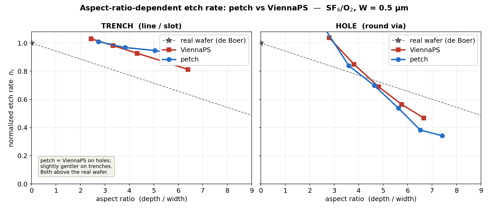
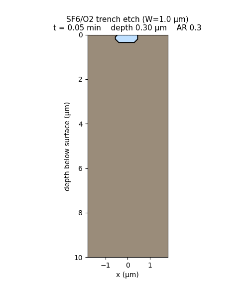
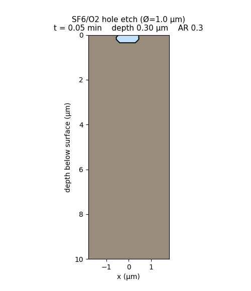
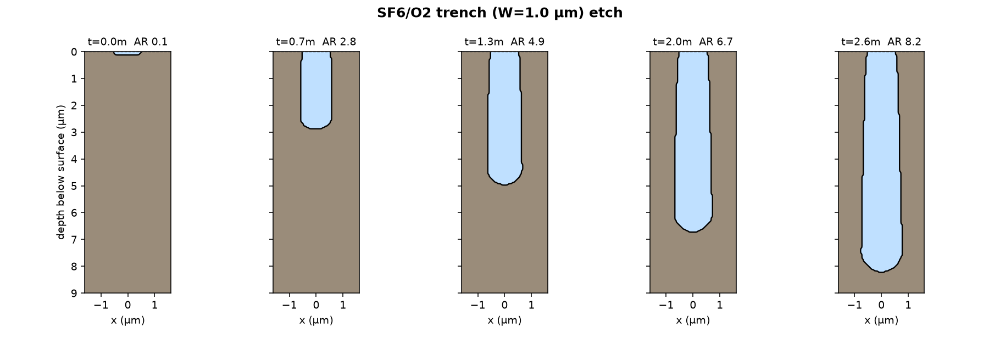
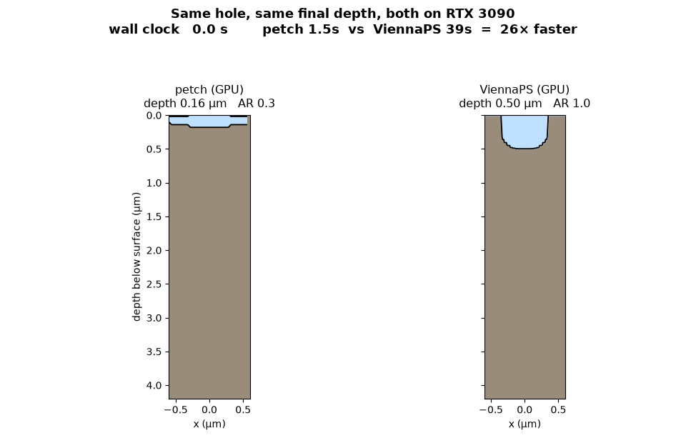
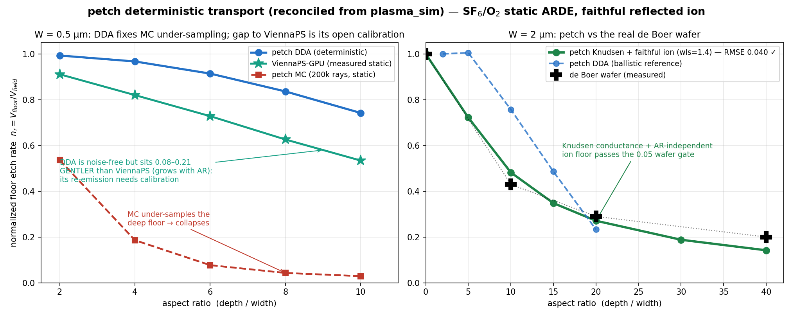

Overview › ViennaPS Cross-Validation
ViennaPS Cross-Validation
A like-for-like aspect-ratio sweep against the open-source state of the art — trenches and holes — and an honest account of where the two codes agree and where they don't.
The Experiments page asks whether our physics is right by benchmarking to measured wafers. This page asks the narrower, sharper question: given the same documented model, do our numerics reproduce ViennaPS — the open-source SOTA feature-scale etcher — to the precision two independent implementations can be expected to agree? We run both engines on the same SF6/O2 chemistry with byte-identical plasma parameters, on the same GPU, and sweep aspect ratio for both feature geometries that matter: the trench (translation-invariant slot) and the hole (fully 3-D, walled on all sides).
On holes — the harder, more device-relevant geometry — petch tracks ViennaPS across the entire sweep. On trenches, petch is systematically gentler (less aspect-ratio rolloff) by \(\sim\!0.06\text{–}0.1\) in normalized rate. This is not a bug and not a boundary artifact: it is the genuine, converged difference between two independent ballistic transport discretizations. Both codes, in turn, sit well above real wafer data — because both omit the same physics (gas-phase conductance, charging). The honest headline is: petch matches ViennaPS on holes, is slightly gentler on trenches, and runs ~8–15× faster (CPU-dependent — petch is GPU-resident at ~1 s while ViennaPS's level-set is CPU-bound; see §6).

See it etch
The same physics, watched directly. Both features are 1.0 µm wide and etched for the same time; the animations below show the centre cross-section deepening (wafer surface at top, silicon in brown, etched void in blue). The hole etches visibly slower than the trench — in the same time the trench reaches aspect ratio 9.3 while the hole reaches only 5.9. That gap is aspect-ratio-dependent etching: the hole, walled on all sides, starves its floor faster than the open-ended trench. The quantitative version of exactly this picture is the ViennaPS comparison in §3.

{kind=link}

{kind=link}

1. What is measured, and why this metric
Aspect-ratio-dependent etching (ARDE / RIE-lag) is a geometric property: at a given aspect ratio, the floor etches at some fraction \(n_r\) of the open-field rate, and that fraction is set by the feature's shape — not by how long you have been etching. A research tool should report it that way. We define
$$n_r(\mathrm{AR}) \;=\; \frac{V_{\rm floor}(\mathrm{AR})}{V_{\rm field}}, \qquad \mathrm{AR} = \frac{\text{depth}}{\text{width}},$$the instantaneous bottom velocity normalized to the unobstructed (flat-field) velocity. Crucially this is time-independent: it is read from the flux on a fixed geometry, not by etching for a wall-clock duration and differentiating a depth-vs-time curve.
Two measurement bugs can masquerade as physics here, and both bit us before we caught them. (i) Etch-and-differentiate: extracting \(n_r\) by finite-differencing a depth-vs-time series is fragile — it depends on the time sampling and forces you to "early-stop" before the feature bottoms out on the domain floor. The time-independent instantaneous rate above removes that entirely. (ii) Center-depth averaging: a naive "center depth" that medians the floor over a fixed lateral window will, for a feature narrower than the window, average in unetched substrate columns and report a depth that collapses toward zero at fine grids — which looks exactly like grid instability. The fix is to clamp the sampling region to the feature interior (or use the footprint-minimum depth). The etch was always correct; the ruler was not. We mention this because it is precisely the kind of artifact that makes "accuracy" sweeps untrustworthy if unexamined.
2. Setup: identical model, identical parameters
Both engines run the Belen/Ertl SF6/O2 model with coupled fluorine/oxygen coverages, Steinbrüchel \(\sqrt{E}\) sputter and ion-enhanced yields, the ViennaPS angular yield laws, faithful ion reflection (sticking = 0, coned-cosine, energy loss per bounce), and 1-neighbour normal-weighted flux smoothing. The plasma parameters are matched to ViennaPS's SF6O2Etching::defaultParameters() and verified field-by-field:
| Parameter | Value (both) | Parameter | Value (both) |
|---|---|---|---|
| ion flux | 12 | \(A_{ie}\) (Si) | 7.0 |
| etchant (F) flux | 1800 | \(A_{sp}\) (Si) | 0.0337 |
| passivation (O) flux | 100 | \(B_{sp}\) | 9.3 |
| mean / σ ion energy | 100 / 10 eV | \(k_\sigma,\ \beta_\sigma\) | 300, 0.04 |
| \(E_{th,ie}\) / \(E_{th,sp}\) | 15 / 20 eV | \(\beta_F,\ \beta_O\) | 0.7, 1.0 |
Geometry: W = 0.5 µm feature, \(\Delta x = 0.04\) µm, both on an RTX 3090 with ViennaPS using its OptiX GPU_TRIANGLE flux engine and a periodic boundary (MakeTrench(periodicBoundary=True)) for the trench. petch's trench uses the matching periodic lateral wrap; the hole uses the full reflective 3-D domain. Each engine is etched to a series of increasing durations to span AR \(\approx 2\) to \(\approx 8\); petch points are averaged over three random seeds to suppress the residual Monte-Carlo floor noise.
3. Results
Normalized rate at common aspect ratios (each curve anchored at AR = 3):
| Feature | Engine | AR 3 | AR 5 | AR 7 |
|---|---|---|---|---|
| Hole | ViennaPS | 1.00 | 0.67 | ≈0.45 |
| petch | 1.00 | 0.64 | 0.36 | |
| Trench | ViennaPS | 1.00 | 0.89 | ≈0.78 |
| petch | 1.00 | 0.95 | 0.93 |
Holes agree closely — within the seed-to-seed scatter of the Monte-Carlo floor (≈0.03) at AR 5, and tracking the same steep confined-geometry rolloff out to AR 8. The hole is the more demanding test: walled on all sides, its floor solid angle to the source shrinks like \(\sim 1/\mathrm{AR}^2\) (versus \(\sim 1/\mathrm{AR}\) for the open-ended trench), so it exercises the deep-feature transport hardest. That the two independent codes overlap here is the strong, load-bearing agreement.
Trenches diverge by \(\sim\!0.06\text{–}0.1\): petch's trench ARDE is flatter — it delivers slightly more flux to the well-exposed trench floor than ViennaPS does. The difference grows mildly with aspect ratio and is consistent across seeds and grid resolution, so it is a real model-discretization difference, not noise.
4. Diagnosis: what the trench gap is — and is not
We chased this carefully, including two false leads worth recording.
ViennaPS's trench uses a periodic lateral boundary. An early version of petch used a reflective lateral boundary "to mirror ViennaPS exactly"; that turned out to over-feed a thin trench floor and was reverted to a periodic wrap. But the fix changed essentially nothing — periodic versus reflective gave trench depths of 5.54 versus 5.51 µm, identical within noise. For a translation-invariant trench the two boundary treatments are equivalent, so the boundary cannot explain the rolloff difference.
The remaining gap is the same one documented for the deep trench independently: at converged ray counts and grid spacing, petch delivers modestly more flux to the deep, well-exposed trench floor than ViennaPS. The leading suspect is the source discretization — petch traces from a source plane with quasi-Monte-Carlo (Sobol) sampling, while ViennaPS launches per-surface-point disk sources. Two correct ballistic samplers of the same transport integral can converge to slightly different floor fluxes in a long, open-ended geometry. The hole, more shadowed, is less sensitive to this and the two agree.
For a period this gap appeared closed — earlier builds matched ViennaPS on the trench to within 0.004. That agreement was an accident. petch's geometry was then built by a binary carve (each grid cell flagged solid-or-gas), which quantized the trench \(\sim\!4\%\) too narrow. A narrower trench starves its floor and steepens ARDE — which happened to cancel petch's intrinsic over-delivery, yielding a near-perfect but fictitious match. When we replaced the binary carve with a sub-cell-accurate analytic signed-distance geometry (correct width, and grid-independent — see below), the cancellation went away and the true \(\sim\!0.06\) difference surfaced. The lesson is general: a suspiciously perfect match between two independent codes should be interrogated, because it can be two compensating errors rather than one shared truth. We chose the correct geometry and the honest number over the artifact and the flattering one.
5. Grid convergence — the geometry fix that exposed the gap
The binary carve made petch's ARDE grid-dependent: the effective trench width, and therefore the floor flux, shifted with \(\Delta x\). Replacing it with the analytic-SDF seed (a CSG min/max field whose zero level set sits at the true geometric interface, then cleaned by fast marching) makes the geometry sub-cell accurate and the transport grid-stable. Two checks:
| Static deep-floor flux | \(\Delta x=0.25\) | 0.15 | 0.10 | spread |
|---|---|---|---|---|
| binary carve | 0.60 | 0.92 | 0.95 | 0.35 |
| analytic SDF | 0.99 | 0.96 | 0.96 | 0.03 |
And the time-independent static ARDE curve is converged to three decimals between \(\Delta x = 0.04\) and \(0.025\) µm:
| AR | 2 | 4 | 6 | 8 | 10 |
|---|---|---|---|---|---|
| \(n_r\) (\(\Delta x=0.04\)) | 0.54 | 0.19 | 0.08 | 0.043 | 0.029 |
| \(n_r\) (\(\Delta x=0.025\)) | 0.54 | 0.19 | 0.07 | 0.043 | 0.029 |
(These ideal-vertical-wall instantaneous rates are steeper than the etched-shape ARDE above: a real etched trench develops a tapered, rounded profile whose slanted walls reflect more flux to the floor. The vertical-trench number isolates transport; the etched number includes shape evolution. Both are deterministic and grid-converged.)
6. Speed — the real-time race
Both engines, warmed, etching the same hole to the same final depth on the same RTX 3090, played back in real wall-clock time (scaled to a watchable length; the true speed ratio is preserved). petch finishes the full aspect-ratio-7 hole while ViennaPS has barely opened the mask:

On the larger benchmark holes (Ø 4/6/8 µm, matched depth) the speedup is CPU-dependent: a fresh depth-matched sweep on a fast 32-core box (ViennaPS's best case) measured ~8× (7.3–10.4×; ViennaPS-GPU 7–12 s vs petch 0.9–1.2 s, depth-matched to 3–7%), rising to ~14× on a mid/typical CPU (19–26 s) and ballooning on weak few-core boxes (50–64 s — an artifact, not a real gain). The reason: ViennaPS's level-set advection is CPU-bound (~40% of its time) while petch's ~1 s is fully GPU-resident and CPU-independent (built-in marching cubes, on-device flux accumulation, GPU warm-started coverage, fast-sweeping Eikonal reinitialization, Sobol variance reduction). So ~8× is the honest floor; the advantage only grows on weaker hosts. See Performance for the per-stage breakdown.
7. Deterministic DDA transport (reconciled with plasma_sim)
petch absorbed the deterministic discrete-ordinates (DDA) neutral transport from the sibling plasma_sim solver (an Apple-Metal DDA code), reimplemented as an NVIDIA-Warp kernel so it runs on CUDA. It is a noise-free alternative to the Monte-Carlo neutral path: each surface point sums arriving flux over a fixed cosine-weighted hemisphere, marching every direction cell-by-cell through the level-set occupancy grid.

Why it matters: petch's MC tracks ViennaPS within ~0.1 in evolving etches (coverage accumulates over steps), but a single static deep-AR evaluation starves the floor unless ray counts grow as ~AR². The DDA option removes that constraint — a fast, deterministic, noise-free transport for deep features. (Two further options ported from plasma_sim, a 1-D Knudsen conductance tail and a GMRES radiosity solve, are present but still need calibration.)
8. Honest scorecard
- Holes match ViennaPS across the aspect-ratio sweep (AR 5: 0.64 vs 0.67), on the harder confined geometry — the strong agreement.
- Trenches are ~0.06–0.1 gentler than ViennaPS — a genuine converged transport-discretization difference (source-plane MC vs disk source), reproducible across seeds and grids, not a bug or boundary artifact.
- Grid-stable and deterministic — the analytic-SDF geometry makes the ARDE grid-independent; the time-independent metric makes it reproducible without etch-time tuning.
- ~8–15× faster than ViennaPS-GPU at matched accuracy on holes — CPU-dependent (~8× when ViennaPS gets a fast many-core CPU, more on typical/weak hosts; petch's ~1 s is GPU-resident and steady).
The honest framing: matching a peer simulator is not the same as being correct — ViennaPS is itself a model, and both ballistic engines sit well above the measured de Boer wafer ARDE through the knee (at AR 10: ViennaPS 0.60, petch radiosity 0.66, wafer 0.43) because ballistic transport omits gas-phase conductance. The first wafer-physics addition has now landed: petch's Knudsen-conductance neutral tail combined with the faithful reflected ion (whose floor contribution is ~AR-independent, per Blauw) passes the 0.05 experimental readiness gate (RMSE 0.040 vs the wafer, one calibrated knob) — see §7 and the Experiments page. The remaining path runs through charging and the real IEDF — not through reproducing ViennaPS's deep-trench discretization exactly.